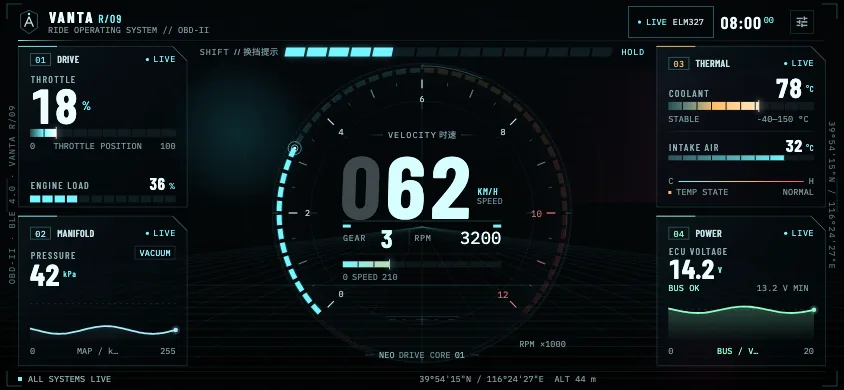
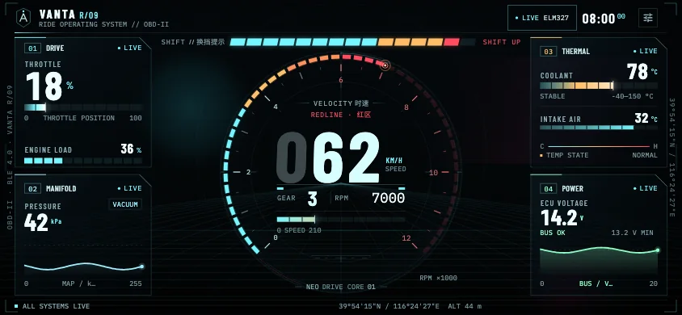
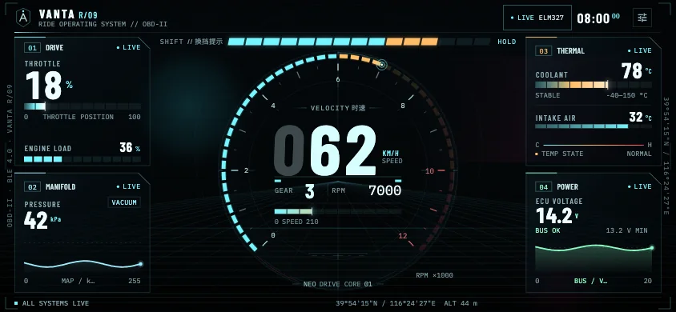
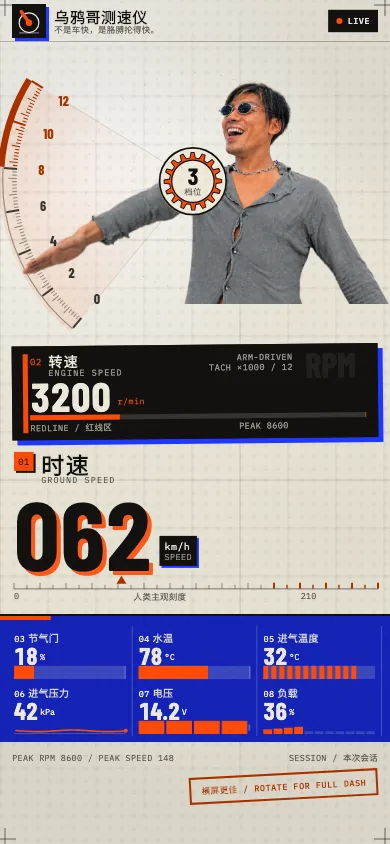
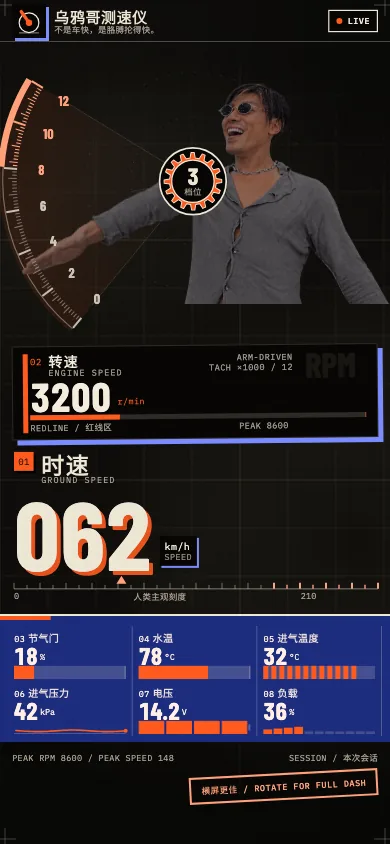
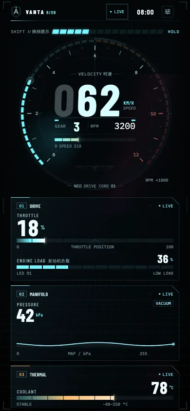

实时遥测
转速、时速、水温、进气温度、进气压力、电压、节气门和负载。每个指标独立刷新，仪表局部重绘，不重建整页。
60 秒窗口局部重绘独立刷新
Android · BLE ELM327 · Standard OBD-II
插上 ELM327，手机通过蓝牙读取标准 OBD-II 实时数据。 转速、时速、水温、进气温度、电压、节气门和负载，显示在 16 套主题里。 自动连接，断线重连，换主题不打断数据。

01 / Data link
OBD-II 是电喷汽车和摩托车的标准诊断接口。插上 BLE ELM327 适配器， Moto Dash 读取 ECU 返回的实时数据（PID）——不拆车、不刷写、不改装。 手机负责显示，适配器负责协议转换，ECU 保持原样。
兼容性取决于车型和适配器固件。当前版本不支持非标协议和 K-line 特殊适配。
02 / Core
真车链路里，掉线、乱序、无响应都是常态。界面之外的部分按“能一直骑”来设计： 自动连接、同一时间只跑一个连接任务、旧会话不污染新读数、超时重试，以及能导出的诊断日志。
转速、时速、水温、进气温度、进气压力、电压、节气门和负载。每个指标独立刷新，仪表局部重绘，不重建整页。
权限申请、记住上次设备、冷启动不弹窗自动连接；断线后先用较短超时直连，再定向扫描上次设备。同一时间只跑一个连接任务。
ELM327 命令一条一条排队，按截止时间调度，避免中低优先级指标一直排不上。NO DATA 不当作 0；断链保留最后读数并标记为过期，只有明确不支持才标记为不可用。
固定 60 秒内存窗口，不写入磁盘，也不按车型改变。趋势线只连接真实样本，长时间没有数据就留空，不把缺失点当成 0。
量程、四段色区、轮询间隔、车速修正、扫描超时、屏幕亮度模式、方向锁定和刘海避让。拖动只预览，松手提交，300ms 后自动保存。
无账号、无云同步、不上传任何数据。网络只用于可选场景素材和应用更新包下载；更新包交给系统安装器，由你确认安装。
03 / Themes
不是把同一种布局换颜色。每套主题有自己的字体、刻度、动效和信息编排； 切换只换界面，连接、设置和 60 秒趋势都保留。
默认主题。270° 转速环、换挡灯带和 60 秒趋势，信息密度最高的一套。
夜航机械手臂随转速摆动，转轴徽章显示档位，日落后自动切到夜间皮肤。
日常全屏骑行视频随车速变速，HUD 浮在视频上。
复古像素字体、通道状态和四段连接阶段条，像一台车载终端。
复古竹蜻蜓随转速旋转，速度气泡和昼夜自动换肤。
日常270° 缺口表盘、红色刻度和 60 秒趋势，读起来很直接。
性能大号数字和 8 块信息磁贴，底部是细线趋势。
日常代码行号栏、240° 转速盘和终端风格的网关页，给写代码的人。
复古全息人物、霓虹页签和 56 列转速带，像驾驶舱。
复古270° 表盘、扫描线和速度粒子，夜间骑行很抢眼的一套。
夜航黑底细线、横向转速带、压弯倾角和 G 值，没有多余装饰。
日常48 段转速轨、12 秒速度柱和急加速 / 急刹车告警。
性能超重斜体时速、压弯摩托姿态和 5 张遥测卡。
性能全宽红色转速带、琥珀档位窗和 180° 水温拱。
夜航240° 双圆盘、悬浮指针和日夜双皮肤。
性能纯黑扁平：DIN 大数字、橄榄刻度，倾角与横向/纵向 G 同屏。
性能只展示 16 套正式主题。
04 / Signature
读数只是起点。冷车保护、导航镜像、档位标定、日夜皮肤和能排查问题的诊断日志， 都是日常骑行会用到的功能。
冷车时，发动机还没到工作温度，红线不该按热车标准来画。水温从冷到热， 四段色区从量程 60% 的位置沿 30°C 斜坡回到你设置的红线； 只改仪表显示，不动已保存的设置。拖动下方水温，看红区怎么让路。

40 °C · 色区前移
70 °C · 恢复完整通过本地 Binder 读取手机上的高德导航，把转向、道路、剩余里程、车道、红绿灯读秒和限速显示在仪表顶栏。不联网、不读剪贴板、不画地图。
引导骑行完成标定后，用 RPM 和车速推算档位。未标定或不确定时统一显示 --，不猜。
标定结果会写进车辆档案；换车或改齿比后需要重新标定。
按日出日落自动切换皮肤，并调整 App 内亮度。手动选日间或夜间只换皮肤，不改系统亮度。WUYAGE、DORA MOTO 和 CRIMSON TACH 支持日夜双皮肤。



Portrait · 390 × 84405 / Layout
16 套主题都有独立的横屏和竖屏排版，不是把同一张图拉伸。 横屏优先信息密度，竖屏固定顶栏、内容可滚动；安全区、刘海避让和字体缩放由应用统一处理。
06 / Compatibility
这是一个 Android + BLE ELM327 + 标准 OBD-II 的工具，不是通用诊断仪。 先把边界写清楚，省得下载后才发现不兼容。
Moto Dash 是免费工具，所有功能开放使用，不存在任何强制付费项目。 本软件禁止售卖，任何付费出售本应用的行为均属盗版。 官方渠道仅以抖音号 @Kfkrks（抖音 ID 16592703）为准，官方不会私下索要费用。
07 / Get started
下载 APK，插上适配器，授权蓝牙。剩下的交给自动连接： 有上次设备就直接连接，失败再打开连接页让你选。
08 / Support
Moto Dash 是免费工具，所有功能开放使用。如果它帮到了你，可以自愿支持； 赞赏不解锁任何功能，也不影响后续更新。
自愿捐赠，和软件使用权限无关。
微信里长按识别，或截图后用微信「扫一扫」从相册识别。官方捐赠通道只有当前页面的赞赏码。
所有功能开放使用，不存在强制付费项目。
任何付费出售本应用的行为均属盗版。
仅抖音号 @Kfkrks（ID 16592703）与当前页面。